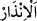
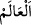

özel peygamberine, en yüce habîbine ve ilk dostu Muhammed Mustafâ (s.a.)’e
“Furkân’ı indiren Allah, yüceler yücesidir.” O’nun hayır ve bereketi çoktur.
“
” uyarıcı/korkutucu anlamınadır. “
” ise korkutucu haber vermektir. Nitekim “
” de sevinçli bir şeyi haber vermektir.
Râgıb Isfahânî der ki: “
” içindeki cevher ve ârazlarla birlikte feleğin ismidir.
Aslında damgalanıp mühürlenen şeye göre damga ve mühür gibi bir şeyin bilinip
tanınmasına yarayan şeyin ismidir. Kelimenin binâsının bu siygada (âlem şeklinde)
yapılması, onun âlet/vâsıta gibi olmasındandır. Çünkü âlem kendisini yaratanın
varlığına delâlet etme husûsunda bir âlettir. Âyette âlem kelimesinin çoğul siygasıyla
gelmesi ise her türe ‘âlem’ adı verilip ‘insan âlemi, su âlemi, ateş âlemi…’ denmesi
sebebiyledir. Yine bu kelimenin cem-i müzekker sâlim siygasında çoğul yapılması
âlemler içinde insanın da bulunması yüzündendir. Çünkü bir lafızda insan, başkalarıyla
müşterek yapıldığında onun hükmü gâlib olur.”
Şeyhzâde der ki: “Âlem kelimesi vav ve nûn harfleriyle çoğul yapılmıştır. Çünkü
maksad cin ve insan cinsinden akıl sâhibi bütün fertleri içine almaktır. Çünkü melekler
her ne kadar ‘âlem’in kapsamına dâhil olsa da Rasûlullah (s.a.) meleklere peygamber
olarak gönderilmediğinden mükellef tutulan âlemlerden geriye ancak cinler ve insanlar
kalır. Hz. Peygamber (a.s.) cinlerin ve insanların tamamına peygamber olarak
gönderilmiştir.”
Bu durumda tefsîri yapılan bu âyet ve Rasûlullah (s.a.)’in: “Ben yaratılmışların
tamamına elçi gönderildim.”[192] sözü tahsîs edilmiş genel bir ifâde hükmündedir.
Rasûlullah (s.a.) dışında bütün peygamberler belli bir kavme elçi olarak gönderilmiştir.
Nûh (a.s.)’ın her ne kadar bi‘seti/gönderilmesi genel ise de risâlet görevi kendisinden
sonrakiler hakkında genel değildir. Süleyman (a.s.) da cinlere peygamber olarak
gönderilmemiştir. Genel olarak cinlerin onun emrine verilmesi dâvetinin genel olmasını
gerektirmez.
Âyetteki “kuluna” ifâdesinde Hz. Peygamber (s.a.)’i mutlak olarak kullukla
şereflendirme ve bu özellikle O’nu diğer peygamberlerden üstün kılma söz konusudur.
Çünkü Allah peygamberlerden hiçbirini mutlak bir ifâdeyle “kul” diye
isimlendirmemiştir. Meselâ “Zekeriya kuluna” (Meryem, 19/2) buyurmuştur. Yine
burada hristiyanları reddetmek üzere rasûlün ancak kendisini gönderenin kulu olduğu
hatırlatılmaktadır. Bundan dolayıdır ki kelime-i şehâdette Hz. Peygamber (s.a.)’in
Allah’ın kulu olduğu, peygamberi olduğundan önce zikredilmiştir.
“
” fiili, bereket kökünden olup ‘hayrı çok oldu’ anlamındadır. Allah Teâlâ’nın
hayrının çok olmasını Furkan’ın indirilmesine bağlaması Kur’ân’da dînî ve dünyevî pek
çok hayırlı şeyin bulunmasındandır. Ya da bu fiil, Allah her şeye üstün geldi,
sıfatlarında ve fiillerinde her şeyden yüce oldu mânâsınadır. Çünkü bereket kelimesi
üstünlük/ziyâdelik mânâsını ihtivâ eder. Bu mânânın bu kelimeyle ifâde edilmesi,
Allah’ın yüceliğine delâlet etmesinden dolayıdır.